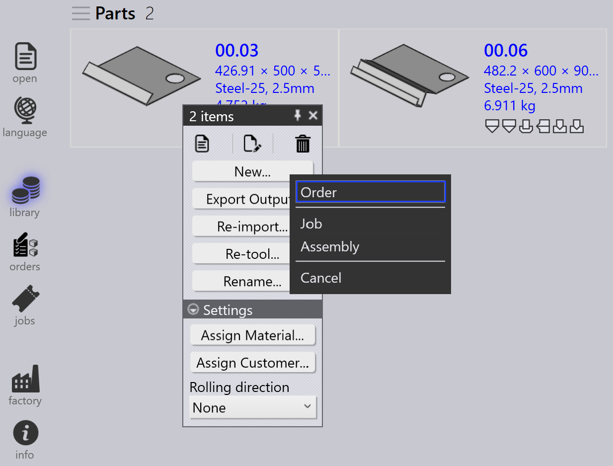

Import orders
Orders สามารถสร้างหรือนำเข้าได้โดยใช้วิธีต่อไปนี้:
-
นำเข้า orders จากไฟล์สเปรดชีต
-
นำเข้า orders โดยอัตโนมัติผ่านการตั้งค่า watch
-
สร้าง orders จากชิ้นงานที่มีอยู่ใน part library
-
สร้าง orders จาก assembly static nests
นำเข้า orders จากสเปรดชีต
-
ไปที่ เปิด → นำเข้า _คำสั่งงาน…

-
รูปแบบสเปรดชีตที่รองรับได้แก่ CSV, XLSX และ XML
-
เลือกไฟล์สเปรดชีตที่ต้องการและคลิก เปิด
-
กระบวนการนำเข้าคล้ายกับเวิร์กโฟลว์การนำเข้า Job/Assembly

| คุณยังสามารถลากและวางสเปรดชีตลงในหน้า Orders โดยตรง เพื่อนำเข้า orders |
นำเข้า orders โดยใช้การตั้งค่า watch
-
เปิดใช้งานตัวเลือก นำเข้าสเปรดชีตจาก 'Live Folder' ใน การตั้งค่าเฝ้าติดตาม
-
เลือก นำเข้าคำสั่งงาน ใน ตัวเลือกการนำเข้าสเปรดชีต
-
กำหนดค่าตำแหน่งโฟลเดอร์ที่ควรนำเข้า orders
-
ระบบจะตรวจสอบโฟลเดอร์ที่กำหนดค่าอย่างต่อเนื่อง
-
ไฟล์สเปรดชีตที่เพิ่มใหม่จะถูกนำเข้าลงใน Orders โดยอัตโนมัติ

| สำหรับขั้นตอนการกำหนดค่าโดยละเอียด ให้ดูที่ เอกสาร Watch settings |
สร้าง orders จาก part library
-
เลือกชิ้นงานที่ต้องการจาก Part Library
-
คลิกขวาและเลือก ใหม่… → คำสั่งงาน เพื่อเปิด กล่องโต้ตอบ คำสั่งงานใหม่

-
ป้อนรายละเอียดที่ต้องการเช่น ปริมาณ วันครบกำหนด และลำดับความสำคัญ

-
คลิก ตกลง เพื่อสร้าง orders
-
ระบบจะสลับไปยังหน้า Orders โดยอัตโนมัติ
-
Orders ที่สร้างขึ้นจะแสดงในหน้า Orders Ready สำหรับการสร้าง job
สร้าง orders จาก assembly
-
คลิกขวาที่ Assembly ที่ต้องการ
-
เลือก ใหม่… → คำสั่งงาน เพื่อเปิด กล่องโต้ตอบ คำสั่งงานใหม่

-
ป้อน จำนวนแอสเซมบลี ที่ต้องการ

-
คลิก ตกลง เพื่อสร้าง orders